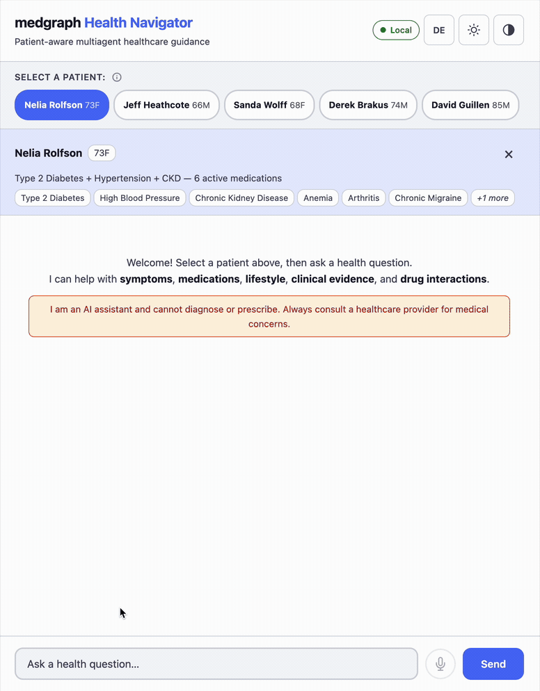
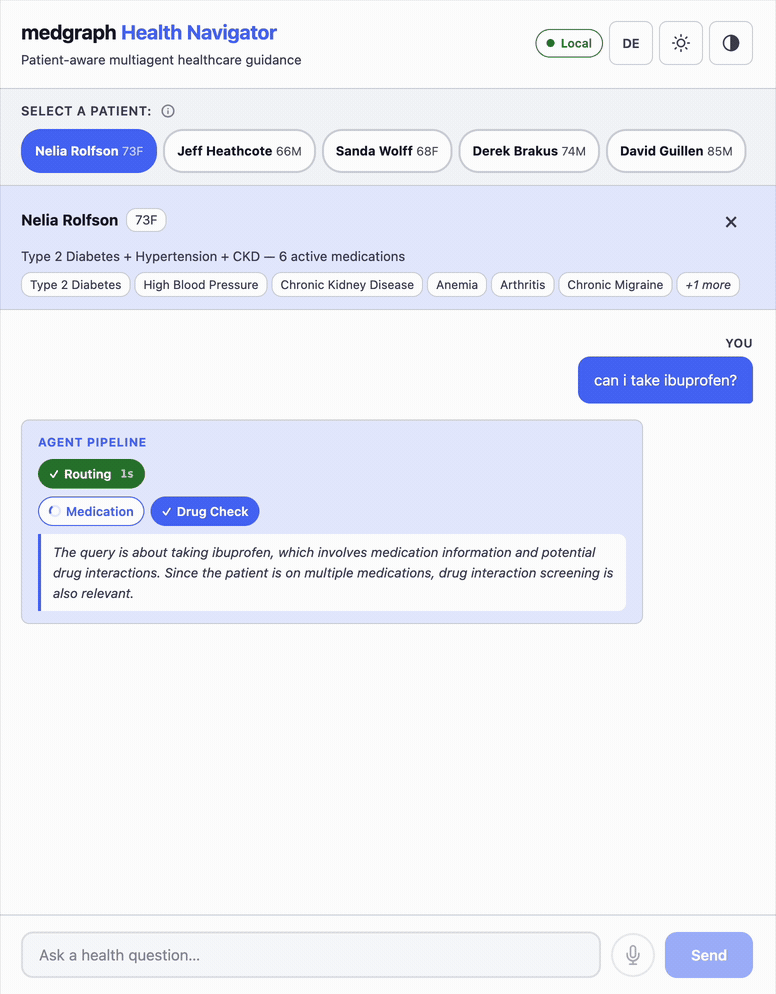
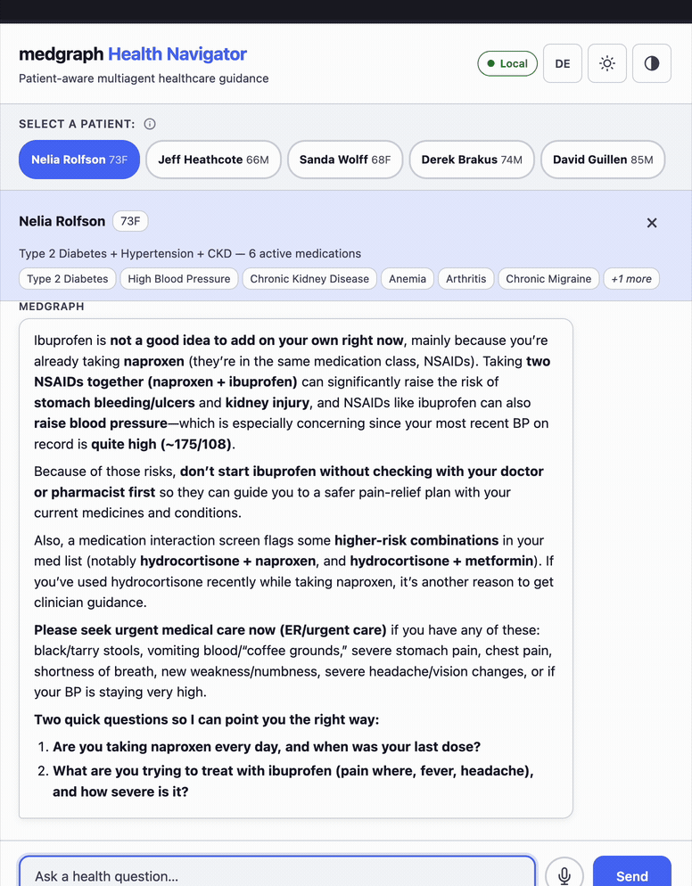
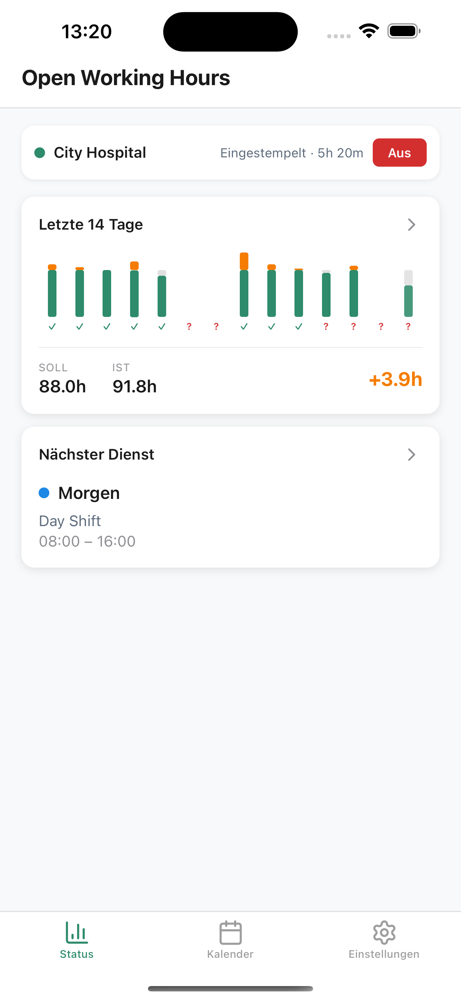
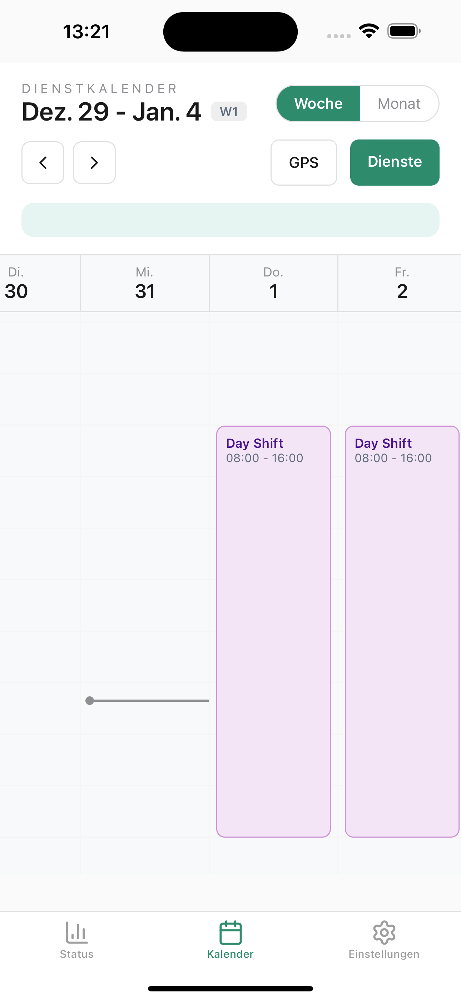
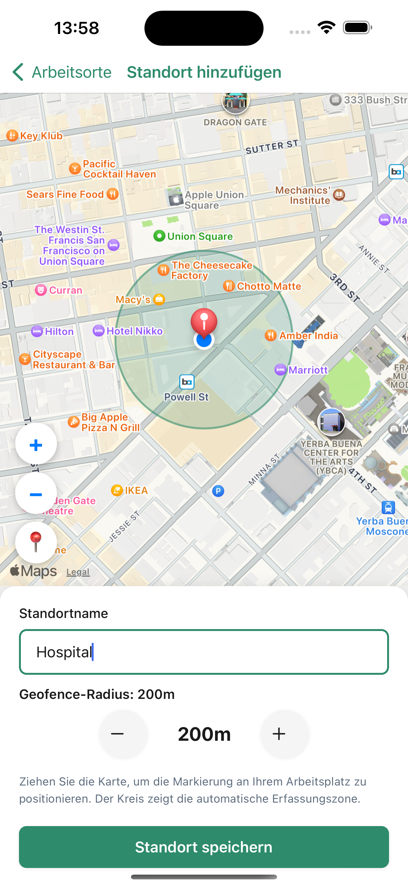

Collaboration
Trustworthy AI for Patient & Health Information
Building and evaluating AI systems that give patients reliable, well-sourced health information with clear safety boundaries, developed in partnership with the organisations closest to patients.
MedGraph is an interactive demo of a multi-agent health assistant: it answers patient questions with responses grounded in clinical guidelines (ADA, NICE, WHO, Cochrane), screens medications against FDA interaction data (OpenFDA labels and adverse-event reports), and attaches inline citations with source-confidence tiers. Built-in safety boundaries refuse diagnosis, prescription, and dose changes, and escalate emergencies. It runs open models locally with a vLLM/GPU deployment path, is WCAG-accessible, and ships with an evaluation harness grounded in public NLM medical benchmarks (LiveQA, MedicationQA, and an adversarial safety set).



Built with LangGraph multi-agent orchestration, Qdrant retrieval, and an OpenFDA tool layer. An architecture and evaluation proof rather than a deployed product.
A related evaluation I ran, LLMs Systematically Omit Safety-Critical Medical Information for Non-Expert Audiences, found that large language models systematically omit safety-critical information when answering non-expert audiences, i.e. patients. (Working paper)
The direction I care most about, and have published on, is building these systems with patient-led organisations from the start.
Evidence Infrastructures for Working Conditions (Privacy-Preserving Measurement)
Building tools that let distributed contributors generate system-level evidence about working conditions — without exposing individuals.
Open Working Hours is a native iOS app (offline-first) for tracking and reviewing working time with minimal daily effort, plus a backend that aggregates contributions into anonymized public statistics. It provides a privacy-by-design measurement layer.



The system implements privacy safeguards including minimum group sizes, cell suppression, statistical noise calibration, and built-in export/deletion functionality.
Interfaces for Conversational Language Learning
Prototyping educational tools that scaffold language learning with LLMs — integrating didactic structure, user modeling, and real-time system feedback.
Tinge is a conversational LLM-based app that tailors conversational vocabulary exploration to learners' interests using adaptive memory and interactive visualizations.


Built with Three.js, JavaScript (Node/Express), deployed via Railway.
Human-Centered Evaluation
Designing infrastructure and experimental setups to assess LLM behavior in context-specific tasks — with a focus on failure modes, interaction dynamics, and the mismatch between benchmark metrics and real-world use.
Level Ethics is a prototype for red-teaming LLMs using diverse, crowdsourced user avatars, designed to surface failure modes and value clashes during early development stages.
Built with Python and Streamlit, deployed via Streamlit Cloud. An exploratory prototyping sprint in 2025 with Jie Liang Lin.